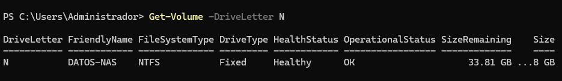
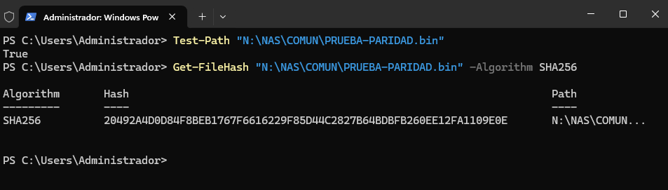
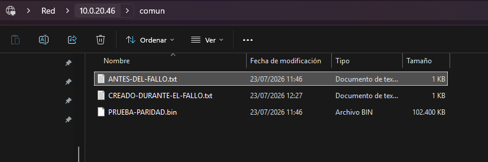

Práctica guiada: servidor NAS/RAID 5 con Windows Server 2025
En un equipo físico, el sistema operativo podría instalarse sobre un RAID creado por una controladora hardware. Sin embargo, VirtualBox no presenta directamente una controladora RAID física al sistema invitado. Para esta simulación utilizaremos discos virtuales independientes y Espacios de almacenamiento de Windows Server.
1 Objetivos de la práctica
Al finalizar la práctica, serás capaz de:
Instalar Windows Server 2025 sobre un disco NVMe virtual.
Configurar una dirección IPv4 estática.
Crear usuarios y grupos locales.
Crear un grupo de almacenamiento con tres discos.
Crear un disco virtual con paridad.
Crear y formatear un volumen NTFS.
Publicar recursos compartidos mediante SMB.
Diferenciar permisos de Compartir y permisos de Seguridad/NTFS.
Configurar correctamente la herencia.
Comprobar el acceso con distintos usuarios.
Comprender por qué Windows no permite utilizar varios usuarios simultáneamente contra el mismo servidor SMB.
2 Configuración de la máquina virtual.
Cada alumno creará un servidor windows a través de VirtualBox en adaptador puente.
La variable xx representa el número asignado al alumno.
Password para la práctica: Pass123!
| Elemento | Valor de ejemplo |
|---|---|
| Nombre de la máquina virtual | WS25 UEFI |
| Nombre del servidor | SRV-NASxx |
| Sistema operativo | Windows Server 2025 con Experiencia de escritorio |
| Virtualizador | VirtualBox 7.2.10 |
| Red | Adaptador puente |
| Red IPv4 | 10.0.20.{asignada_por_dhcp}/24 |
| Puerta de enlace | 10.0.20.1 |
| DNS preferido | 8.8.8.8 |
| DNS alternativo | 1.1.1.1 |
| Memoria RAM | 4/8 GB |
| Procesadores | 2/4 |
| Chipset | ICH9 |
| Caracteristicas | UEFI |
| Red | Adaptador puente |
| Disco del sistema | 60 GB NVMe |
| Disco adicional 1 | 20 GB NVMe |
| Disco adicional 2 | 20 GB NVMe |
| Disco adicional 3 | 20 GB NVMe |
Empezamos la creación de VM como siempre, pero hay que hacer algunos cambios antes de instalar:
Cambiar chipset:

2.1 Habilitar UEFI

2.2 Organización de las controladoras
La configuración quedará así:
Controladora NVMe
├── Disco del sistema: 60 GB
├── Disco de datos 1: 20 GB
├── Disco de datos 2: 20 GB
└── Disco de datos 3: 20 GB
Unidad óptica (CD/DVD)
└── ISO de Windows Server 2025
Los cuatro discos deben estar conectados a la controladora NVMe.
No conectaremos los tres discos de datos a SATA porque, en las pruebas realizadas en este entorno, VirtualBox proporcionaba identificadores repetidos y Storage Spaces no distinguía correctamente los discos.
Para crear los discos en NVMe, abrimos Almacenamiento y por defecto habrá creado una unidad de disco duro de controlador SATA:

La eliminamos clicando sobre remove attachment, pero conservamos la unidad óptica.
Damos a añadir controladores:

y seleccionamos NMVe

Entonces enlazamos la unidad de disco duro en el controlador NVMe, dándole a add attachment.

Ahí damos a crear para crear un disco duro que sustituya al que hemos quitado. Le daremos los 60 GB para el disco duro del SO.

Creamos tres discos más de 20 GB y los añadimos al controlador NVMe

Después de crear todos los discos nos quedará algo parecido a esto:

2.3 Configuración especial de NVMe en VirtualBox (patch)
Oracle documenta este patch como solución provisional para huéspedes Windows que no detectan correctamente los discos conectados a la controladora NVMe. Habrá que realizar estos pasos hasta que Virtual Box solucione el problema en una versión posterior.
Antes de iniciar la máquina virutal, (con la máquina virtual completamente apagada —no guardada ni pausada—) abre CMD en el equipo anfitrión como administrador:
cd "C:\Program Files\Oracle\VirtualBox"Ejecuta los siguientes comandos sustituyendo el nombre de tu máquina virtual:
VBoxManage setextradata "WS25 UEFI" "VBoxInternal/Devices/nvme/0/Config/MsiXSupported" 0VBoxManage setextradata "WS25 UEFI" "VBoxInternal/Devices/nvme/0/Config/CtrlMemBufSize" 0Para comprobar que se han aplicado:
VBoxManage getextradata "WS25 UEFI" enumerateDeben aparecer las dos propiedades configuradas con valor 0.

2.4 Propuesta de direccionamiento
Para evitar conflictos con la puerta de enlace y con otros equipos, puede utilizarse esta fórmula:
Dirección IP = 10.0.20.{asignada_por_dhcp}
Nombre: SRV-NAS01
Máscara: 255.255.255.0
Puerta de enlace: 10.0.20.1
Los discos VDI pueden ser de reservado dinámicamente. Windows seguirá viendo su capacidad virtual completa, aunque el archivo VDI crezca según se utilice.
2.5 Como nos queda al final:

3 Instalación de Windows Server 2025
Inicia la máquina virtual desde la ISO.
Selecciona: Windows Server 2025 Standard Evaluation (Experiencia de escritorio)

Cuando el instalador solicite el destino, deben aparecer cuatro discos:
Uno de aproximadamente 60 GB.
Tres de aproximadamente 20 GB.
Selecciona únicamente el disco de 60 GB para instalar Windows Server.

No crees particiones ni volúmenes en los tres discos de 20 GB.
El instalador creará automáticamente las particiones necesarias en el disco del sistema.
Resultado esperado
Después de instalar Windows:
El disco de 60 GB contendrá Windows Server.
Los tres discos de 20 GB permanecerán vacíos.
Los discos de datos no deberán inicializarse desde Administración de discos.
Microsoft indica que los discos destinados a Storage Spaces deben estar vacíos, sin formato y sin volúmenes. También indica que el sistema operativo no puede alojarse dentro del espacio de almacenamiento; por eso el disco del sistema queda separado del grupo.
Una vez instalado el sistema, cada vez que queramos abrirlo nos pedirá introducir Ctrl+Alt+Del, pero al ser una máquina virtual esta combinación de comandos se aplicará a la máquina host, no a la VM, así que podemos utilizar la interfaz de Virtual Box para introducirlos:

Finalmente se cargará el panle de Administrador del servidor:

3.1 Instalar complementos del invitado
Seguir las instrucciones de instalación en otras prácticas de virtualización.
4 Configuración inicial del servidor
4.1 Cambiar el nombre del equipo
Desde PowerShell como administrador:
Rename-Computer -NewName "SRV-NASxx" -RestartSustituye xx por el número correspondiente que se te ha asignado en clase (para evitar colisión con otros usuarios).
Después del reinicio comprobamos usando el comando hostname

4.2 Configurar la red
En la shell usa ipconfig para ver qué dirección IP te ha asignado el DHCP, esa será la misma que configuraremos fija.

Panel de control → Redes e Internet → Centro de redes y recursos compartidos → Cambiar configuración del adaptador

Abre las propiedades de Ethernet y configura IPv4.

Comprueba la configuración: Get-NetIPConfiguration y haz un ping a 1.1.1.1 para comprobar que tenemos salida a internet.

Get-DnsClientServerAddress -AddressFamily IPv4

Comprueba la conectividad con el host: Test-Connection 10.0.20.7 -Count 2

Los Resultados
Source(Fuente):SRV-NAS01. Este es el nombre de la máquina virtual desde la que estás ejecutando el comando. Es la que envía la prueba.Destination(Destino):10.0.20.7. Es la IP a la que estás haciendo el ping (tu máquina host).IPV4Address/IPV6Address: Estas columnas están vacías en tu imagen. Esto es normal cuando haces ping directamente a una dirección IP (como10.0.20.7), ya que el comando no necesita resolver un nombre de host (comogoogle.com) para encontrar la IP.Bytes:32. Este es el tamaño del paquete de datos de prueba que se envió. 32 bytes es el estándar para estas pruebas.Time(ms)(Tiempo en milisegundos):0. Esta es la métrica más importante aquí. Muestra cuánto tiempo (en milisegundos) tardó el paquete en ir desde la VM hasta el host y volver.- ¿Por qué
0ms? Esto indica una conexión extremadamente rápida y directa. Dado que estás haciendo ping desde una máquina virtual (VM) a su propia máquina anfitriona (host), el tráfico no sale a la red física real; todo sucede dentro de la memoria y la red virtual del software de virtualización (VirtualBox). Es esencialmente instantáneo, por lo que PowerShell lo redondea a 0 ms.
- ¿Por qué
Comprobación DNS: Resolve-DnsName www.microsoft.com

4.3 Establecer el perfil de red como privado
Consulta el nombre del adaptador: Get-NetConnectionProfile
Si se llama Ethernet: Set-NetConnectionProfile -InterfaceAlias "Ethernet" -NetworkCategory Private

Una red privada permite configurar el descubrimiento de equipos y el uso compartido de archivos en una LAN de confianza.
4.4 Comprobación de los discos
Abre PowerShell como administrador:
Get-Disk | Format-Table Number,FriendlyName,SerialNumber,PartitionStyle,Size

Resultado esperado:
Disco del sistema: GPT (Tabla de particiones GUID). Es un estilo de partición de disco moderno. Es el “mapa” que le dice al sistema operativo cómo está dividido el disco físico en secciones lógicas (particiones, como la unidad C:, D:, etc.). Lo ves porque estás usando UEFI en tu máquina virtual de VirtualBox
Tres discos adicionales: RAW. No es un estilo de partición ni un sistema de archivos. Significa que el disco físico virtual está ahí, conectado a la máquina, pero está completamente vacío. No tiene mapa de particiones (ni GPT ni MBR) y, por lo tanto, no tiene ningún sistema de archivos (como NTFS o FAT32).
4.5 Comprueba ahora Storage Spaces:
Get-PhysicalDisk | Format-Table FriendlyName, SerialNumber, CanPool, OperationalStatus, HealthStatus, Size

Es normal que todos tengan el mismo FriendlyName, lo importante es que tengan números de serie o identificadores diferentes y que los tres discos adicionales muestren:
CanPool = True
4.6 Crear el grupo de almacenamiento
Abre: Administrador del servidor → Servicios de archivos y almacenamiento→ Volúmenes→ Grupos de almacenamiento
Selecciona el grupo: Primordial

En la sección Grupos de almacenamiento>Tareas: → Nuevo grupo de almacenamiento:
Nombre: GRUPO-NAS
Descripción: Discos destinados al almacenamiento del servidor NAS
Selecciona exclusivamente los tres discos de 20 GB.

En la columna de asignación selecciona: Automático
No selecciones ningún disco como reserva activa o Hot Spare. Con solo tres discos, los tres son necesarios para crear el espacio de paridad.
Comprobación (en PowerShell) :
Get-StoragePool | Format-Table FriendlyName,HealthStatus,OperationalStatus,Size,AllocatedSize
Debe aparecer:
Primordial
GRUPO-NAS

Microsoft establece este orden de trabajo: primero se agrupan los discos físicos, después se crea un disco virtual desde el grupo y, finalmente, se crea un volumen sobre el disco virtual.
4.7 Crear el disco virtual con paridad (equivalente a RAID 5)
Selecciona GRUPO-NAS.
En la sección Discos virtuales: Tareas> Nuevo disco virtual

Configura:
| Opción | Valor |
|---|---|
| Nombre | DISCO-VIRTUAL-NAS |
| Diseño de almacenamiento | Paridad |
| Tipo de aprovisionamiento | Fijo |
| Tamaño | Tamaño máximo |

Con tres discos de 20 GB, la capacidad bruta es de 60 GB decimales. La capacidad útil será inferior al equivalente de dos discos porque Windows reserva espacio para metadatos, caché y organización interna. No debe esperarse una cifra exacta de 40 GB.

La configuración de paridad:
Distribuye los datos entre los tres discos.
Almacena información de paridad.
Puede soportar el fallo de uno de los tres discos.
Ofrece menos capacidad útil que la suma bruta de los discos.
Es más adecuada para almacenamiento secuencial, archivos y copias que para cargas con muchas escrituras pequeñas.
Al terminar el disco virtual, deja marcada la opción: Crear un volumen cuando se cierre este asistente

4.7.1 Comprobación (en PowerShell)
Get-VirtualDisk |Format-Table FriendlyName,ResiliencySettingName,ProvisioningType,HealthStatus,Size,FootprintOnPool
FriendlyName : DISCO-VIRTUAL-NAS
ResiliencySettingName : Parity
ProvisioningType : Fixed
HealthStatus : Healthy

4.7.2 Crear el volumen

Configura:
| Opción | Valor |
|---|---|
| Disco | DISCO-VIRTUAL-NAS |
| Tamaño | Máximo |
| Letra | N: |
| Sistema de archivos | NTFS |
| Unidad de asignación | Predeterminada |
| Etiqueta | DATOS-NAS |
| Formato rápido | Activado |

Utilizaremos NTFS porque esta práctica está centrada en permisos, herencia, listas de control de acceso y recursos compartidos SMB.

Comprueba el resultado en la shell: Get-Volume -DriveLetter N

4.8 Crear usuarios y grupos locales
Las cuentas locales pertenecen exclusivamente al servidor en el que se crean. En este caso, los usuarios de SRV-NAS01 solo tendrán derechos en SRV-NAS01, al contrario que los grupos y usuarios habituales de los entornos corporativos que son a nivel DNS
Abre: Win + R > lusrmgr.msc

Win + R > lusrmgr.msc es un comando que abre la herramienta Usuarios y grupos locales en Windows. Esta herramienta te permite administrar usuarios y grupos en tu computadora, lo cual es útil para:
Crear nuevos usuarios: Puedes agregar nuevos usuarios a tu computadora y asignarles permisos específicos.
Administrar usuarios existentes: Puedes cambiar las contraseñas de los usuarios, habilitar o deshabilitar cuentas, y modificar sus pertenencias a grupos.
Crear nuevos grupos: Puedes crear grupos para organizar a los usuarios y asignarles permisos colectivos.
Administrar grupos existentes: Puedes agregar o quitar usuarios de los grupos y modificar sus permisos.
Cómo usar Win + R > lusrmgr.msc:
Presiona la tecla Windows + R para abrir el cuadro de diálogo Ejecutar.
Escribe
lusrmgr.mscy presiona Enter.Se abrirá la herramienta Usuarios y grupos locales.
Nota: Esta herramienta solo está disponible en las ediciones Pro y Enterprise de Windows. No está disponible en las ediciones Home.
Usuarios locales

Crea, como mínimo:
- director01
- profesor01
- profesor02
- alumno01
- alumno02

En una práctica de laboratorio puede desmarcarse El usuario debe cambiar la contraseña en el siguiente inicio de sesión, y puede marcarse: La contraseña nunca expira

Esto se hace únicamente para evitar interrupciones durante la práctica. No es una recomendación para un entorno real o en producción
Grupos locales

Crea estos grupos y añádeles los usuarios que has creados antes
NAS_DIRECCION
NAS_PROFESORES
NAS_ALUMNOS
Configura:
| Usuario | Grupo |
|---|---|
| director01 | NAS_DIRECCION |
| profesor01 | NAS_PROFESORES |
| profesor02 | NAS_PROFESORES |
| alumno01 | NAS_ALUMNOS |
| alumno02 | NAS_ALUMNOS |

No asignaremos permisos directamente a los usuarios. Los permisos se asignarán a los grupos.
4.9 Crear la estructura de carpetas
Crea:
N:\NAS
N:\NAS\DIRECCION
N:\NAS\PROFESORES
N:\NAS\ALUMNOS
N:\NAS\COMUN
5 Configurar los niveles de permisos
En Windows existen dos niveles principales de permisos cuando trabajas con almacenamiento en red:
Permisos NTFS (o de sistema de archivos local): Se aplican siempre, tanto si entras al archivo sentado directamente en el servidor como si accedes a través de la red.
Permisos de Compartición (SMB): Solo entran en juego cuando un usuario accede a la carpeta a través de la red mediante una ruta tipo
\\servidor\carpeta.
Ejemplo práctico:
Si te sientas en el servidor localmente y abres la carpeta, los permisos SMB no se aplican (solo actúan los permisos NTFS).
Si estás en otro ordenador de la clase o de la oficina y entras a esa misma carpeta mediante la red (
\\servidor\recurso), se aplican ambos permisos (SMB y NTFS), y Windows aplicará la combinación más restrictiva entre los dos.
5.1 Permisos de Seguridad o NTFS
Se configuran en Propiedades de la carpeta → Seguridad
Se aplican:
Cuando se accede localmente.
Cuando se accede por red.
A carpetas, subcarpetas y archivos.
5.2 Permisos de Compartir
Se configuran en Propiedades de la carpeta → Compartir → Uso compartido avanzado → Permisos
Solo se aplican cuando se accede mediante la red SMB (Server Message Block). Es un protocolo de red de capa de aplicación que se utiliza principalmente en sistemas Windows para compartir archivos, impresoras y carpetas entre diferentes equipos conectados a una misma red local LAN
5.3 Permiso efectivo
Cuando se accede por red se aplican ambos niveles. El usuario obtiene la combinación más restrictiva.
| Compartir | NTFS | Resultado por red |
|---|---|---|
| Control total | Modificar | Modificar |
| Leer | Modificar | Solo lectura |
| Cambiar | Control total | Cambiar |
| Cambiar | Modificar | Modificar/Cambiar |
Por este motivo hay que revisar siempre las dos pestañas.
5.4 Configurar la herencia correctamente
5.4.1 Preparar la carpeta raíz
Abre las propiedades de: N:\NAS
Accede a: Seguridad → Opciones avanzadas → Deshabilitar herencia

Windows mostrará dos opciones:
Convertir los permisos heredados en permisos explícitos: Copia los permisos actuales y deja de heredarlos. Es la opción más segura para esta práctica porque mantiene inicialmente el acceso administrativo.
Quitar todos los permisos heredados: Elimina directamente los permisos heredados. Puede provocar que se pierda el acceso a la carpeta si no se añaden inmediatamente permisos correctos.
Selecciona:
Convertir los permisos heredados en permisos explícitos
En N:\NAS, deja únicamente:
| Principal | Permiso | Se aplica a |
|---|---|---|
| SYSTEM | Control total | Esta carpeta, subcarpetas y archivos |
| Administradores | Control total | Esta carpeta, subcarpetas y archivos |
Elimina de esta carpeta raíz las entradas generales que puedan aparecer, como:
Usuarios
Usuarios autenticados
CREATOR OWNER

Las carpetas que se creen dentro heredarán los permisos de SYSTEM y Administradores. La herencia hace que las subcarpetas y archivos reciban automáticamente las entradas heredables del directorio padre. Windows permite deshabilitarla conservando las entradas como explícitas o eliminando únicamente las heredadas.
5.5 Configurar los permisos NTFS
En cada subcarpeta entra en: Propiedades → Seguridad → Editar → Agregar
Pulsa Ubicaciones y selecciona el servidor local: SRV-NAS01

- Carpeta DIRECCION Agrega: SRV-NAS01\NAS_DIRECCION

Concede: Modificar

Debe aplicarse a Esta carpeta, subcarpetas y archivos, esta es la configuración por defecto, pero si quieres comprobarlo puedes verlo en Seguridad > Opciones avanzadas

- Carpeta PROFESORES
Agrega: SRV-NAS01\NAS_PROFESORES
Concede: Modificar
- Carpeta ALUMNOS
Agrega: SRV-NAS01\NAS_ALUMNOS
Concede: Modificar
- Carpeta COMUN
Agrega:
SRV-NAS01\NAS_DIRECCION
SRV-NAS01\NAS_PROFESORES
SRV-NAS01\NAS_ALUMNOS
Concede a los tres grupos: Modificar
Resultado final de Seguridad
| Carpeta | Grupo autorizado | Permiso NTFS |
|---|---|---|
| DIRECCION | NAS_DIRECCION | Modificar |
| PROFESORES | NAS_PROFESORES | Modificar |
| ALUMNOS | NAS_ALUMNOS | Modificar |
| COMUN | Los tres grupos | Modificar |
| Todas | Administradores | Control total |
| Todas | SYSTEM | Control total |
No utilices Denegar. En esta práctica basta con no conceder acceso a los grupos no autorizados. Los permisos explícitos de denegación complican el cálculo de permisos efectivos y pueden afectar a usuarios que pertenezcan a varios grupos.
5.6 Crear los recursos compartidos
En cada carpeta: Propiedades → Compartir → Uso compartido avanzado>Marca: Compartir esta carpeta

Ahora click en Uso compartido avanzado

Clickamos en Permisos y añadimos el grupo que debe estar autorizado para la carpeta en la que estemos:

Le damos permiso para cambiar.

5.6.1 Comprobar los recursos y permisos
Recursos compartidos: Get-SmbShare | Format-Table Name, Path, Description

Permisos de un recurso: Get-SmbShareAccess -Name PROFESORES

Permisos NTFS: icacls N:\NAS\PROFESORES

Debe aparecer el grupo NAS_PROFESORES con permiso de modificación.
5.7 Comprobación firewall SMB
Windows Server 2025 utiliza reglas más restrictivas al crear recursos compartidos y abre únicamente los puertos necesarios para SMB moderno. El acceso normal utiliza TCP 445.
Desde un cliente comprueba: Test-NetConnection 10.0.20.46 -Port 445

Resultado esperado: TcpTestSucceeded : True. Si devuelve False, revisa:
Firewall de Windows Defender → Configuración avanzada → Reglas de entrada → Uso compartido de archivos e impresoras (SMB-In)
5.8 Resolución del nombre del servidor
Los servidores DNS como 8.8.8.8 o 1.1.1.1 resuelven nombres públicos de Internet, pero no conocen nombres locales como SRV-NAS01
Por tanto, hay dos alternativas.
Utilizar la dirección IP: \\10.0.20.46\PROFESORES
Alternativa por nombre: Añadir en el equipo cliente una entrada en: C:\Windows\System32\drivers\etc\hosts
Ejemplo: 10.0.20.46 SRV-NAS01
Después podrá utilizarse: \\SRV-NAS01\PROFESORES
Durante toda la prueba debe utilizarse siempre el mismo identificador: o la IP o el nombre.
6 Probar el acceso desde un equipo cliente
6.1 Comprobación conectividad:
En cmd en otro equipo dentro de la misma red haz un ping al nombre del servidor, puedes usar el nombre directamente, no hace falta usar la ip, ya que dentro de la misma red esos nombres se conocen.

6.2 Crear un acceso directo a la carpeta compartida del profesor.
La máquina virtual del profesor es SRV-NAS100 y nos ha proporcionado las contraseñas de los usuarios locales que ha creado en su máquina virtual. Ahora queremos crear un acceso directo en nuestro equipo host para poder acceder a su recurso NAS.
Vamos al explorador de archivos y sobre Este Equipo seleccionamos el burger menu Ver más (los tres puntos)

Agregar una ubicación de red


Tendremos acceso a las distintas carpetas de la máquina servidor a la que nos queremos conectar dependiendo del usuario que estemos usando (alumno, profesor etc) (recuerda que tiene que ser usuario y contraseña creados en la máquina a la que nos estamos conectando, no los que hemos configurado en nuestro servidor!)

6.3 Crear una conexión de red.
Ahora nos vamos a conectar a los recursos compartidos de nuestra propia máquina virtual.
6.3.1 Mapeo de Unidades de Red con net use
El comando net use se utiliza en entornos Windows para conectar el equipo local a un recurso compartido en la red (como los que se configuran mediante SMB) y asignarle una letra de unidad virtual para facilitar su acceso desde el Explorador de archivos.
6.3.2 Crear una conexión como profesor
Desde CMD: net use Z: \\10.0.20.46\PROFESORES /user:SRV-NAS01\profesor01 *
El asterisco solicita la contraseña sin mostrarla.

net use: Es la utilidad principal del sistema operativo en línea de comandos para gestionar las conexiones a recursos compartidos.Z:: Es la letra de unidad local que se le va a asignar a este recurso. Una vez ejecutado con éxito, los usuarios verán un nuevo “Disco Z:” en su equipo.\\10.0.20.46\PROFESORES: Es la ruta UNC (Universal Naming Convention) del recurso compartido.10.0.20.46es la dirección IP del servidor o equipo que aloja la carpeta, yPROFESORESes el nombre exacto con el que se ha compartido dicho recurso en la red./user:SRV-NAS01\profesor01: Indica las credenciales específicas con las que se realizará la conexión. En este contexto,SRV-NAS01es el nombre del dominio o del servidor local donde existe el usuario, yprofesor01es la cuenta que cuenta con los permisos necesarios para acceder.*(Asterisco): Es un parámetro de seguridad. Obliga a la terminal a solicitar la contraseña de forma interactiva (ocultando los caracteres mientras se teclea), evitando el grave riesgo de seguridad que supone escribir la contraseña en texto plano directamente en el comando o en un script.

Nota técnica sobre permisos: Para que este comando tenga éxito, el usuario
profesor01debe contar con la validación de dos capas de seguridad en el servidor de destino: los permisos de compartición de red (SMB) y los permisos locales del sistema de archivos (NTFS).
El usuario deberá poder:
Acceder a PROFESORES.
Crear carpetas.
Crear archivos.
Modificar archivos.
Eliminar archivos.
Acceder a COMUN.
No deberá poder acceder a:
DIRECCION
ALUMNOS
6.3.3 Crear una conexión como alumno
Conecta como alumno:
net use Y: \\10.0.20.46\ALUMNOS /user:SRV-NAS01\alumno01 *

No nos va a dejar, como dice el mensaje primero tenemos que borrar la conexión anterior, para ello en la consola de comandos: net use * /delete /y

Cierra también todas las ventanas del Explorador abiertas contra el NAS.
Ahora puedes crear la conexión con alumno:


6.3.4 Crear una conexión como director
net use * /delete /y

6.3.5 Troubleshooting
6.3.5.1 Comprueba la conexión activa en Power Shell como administrador: Get-SmbConnection

Comprueba si existen credenciales guardadas: cmdkey /list

Si hay alguna puedes eliminarla con su correspondiente nombre de servidor o su IP: cmdkey /delete:10.0.20.46
Conecta con el usuario nuevo. Si todavía se conserva una sesión, la opción más fiable para una práctica es:
Cerrar sesión en el equipo cliente → Volver a iniciar sesión → Conectar con el siguiente usuario
No deben probarse simultáneamente dos usuarios diferentes contra el mismo nombre o dirección del NAS. Cada prueba debe realizarse de forma independiente.
7 Simulación del fallo y sustitución de un disco del espacio de paridad
En esta parte comprobaremos que el espacio de paridad continúa funcionando cuando se pierde uno de sus tres discos físicos y aprenderemos a sustituirlo por uno nuevo.
Importante: no se debe desconectar el disco NVMe de 60 GB que contiene Windows Server. Se desconectará únicamente uno de los tres discos de 20 GB pertenecientes a GRUPO-NAS.
En este laboratorio no vamos a corromper manualmente el archivo VDI. Simularemos una avería desconectando uno de los discos de datos de la controladora NVMe. De esta forma, Windows Server interpretará que ha perdido la comunicación con uno de los discos.
Un espacio de paridad con tres discos puede soportar el fallo de un único disco. Mientras permanezca degradado no debe desconectarse un segundo disco, porque el espacio podría quedar inaccesible y producirse una pérdida de datos. Microsoft describe los estados Degraded e Incomplete como situaciones en las que se ha reducido la resistencia, aunque los datos todavía pueden continuar accesibles.
7.1 Identificar claramente los discos virtuales
Para facilitar esta prueba, los archivos VDI deberían tener nombres diferentes:
SRV-NASxx-SO.vdi 60 GB
SRV-NASxx-DATOS1.vdi 20 GB
SRV-NASxx-DATOS2.vdi 20 GB
SRV-NASxx-DATOS3.vdi 20 GB
Esto evita desconectar accidentalmente el disco del sistema operativo.
Desde PowerShell, comprueba los discos pertenecientes al grupo:
Get-StoragePool -FriendlyName "GRUPO-NAS" | Get-PhysicalDisk | Format-Table DeviceId,SerialNumber,UniqueId,OperationalStatus,HealthStatus,Usage,Size

Aunque todos puedan tener el mismo nombre, sus valores SerialNumber y UniqueId deben ser distintos.
7.2 Preparar datos para comprobar su integridad
En la máquina virtual:
Antes de provocar el fallo, crea un archivo de prueba de 100 MB: fsutil file createnew N:\NAS\COMUN\PRUEBA-PARIDAD.bin 104857600
Crea también un archivo de texto: "Archivo creado antes de simular el fallo del disco." | Set-Content "N:\NAS\COMUN\ANTES-DEL-FALLO.txt"
Calcula el hash SHA-256 del archivo binario: Get-FileHash "N:\NAS\COMUN\PRUEBA-PARIDAD.bin" -Algorithm SHA256
Guarda el resultado. El hash nos permitirá comprobar que el archivo no cambia después del fallo y la reparación.

También conviene comprobar desde un equipo cliente que el recurso es accesible:
desde el host, en el explorador de archivos: \\10.0.20.46\COMUN

7.3 Comprobar el estado inicial
Antes de desconectar ningún disco, ejecuta: Get-StoragePool -FriendlyName "GRUPO-NAS" | Format-Table FriendlyName,OperationalStatus,HealthStatus,Size,AllocatedSize

Get-VirtualDisk -FriendlyName "DISCO-VIRTUAL-NAS" | Format-Table FriendlyName,ResiliencySettingName,OperationalStatus,HealthStatus

Get-Volume -DriveLetter N | Format-Table DriveLetter,FileSystemLabel,FileSystem,HealthStatus,OperationalStatus,SizeRemaining,Size

Resultado esperado:
| Elemento | Estado esperado |
|---|---|
| GRUPO-NAS | Healthy / OK |
| DISCO-VIRTUAL-NAS | Healthy / OK |
| Volumen D: | Healthy / OK |
| Tres discos físicos | Healthy / OK |
7.4 Simular la avería de un disco
Apaga correctamente Windows Server: Stop-Computer. Espera hasta que VirtualBox muestre la máquina como completamente apagada.
En VirtualBox
→ Seleccionar WS25 UEFI → Configuración → Almacenamiento → Controladora NVMe
Selecciona uno de los discos de datos .
Pulsa Quitar el dispositivo seleccionado de la controladora. No selecciones el disco que contiene el sistema operativo!

Desconéctalo de la máquina virtual.
Conserva el archivo VDI.
No lo elimines todavía del disco del anfitrión.
Inicia nuevamente la máquina virtual.
7.5 Comprobar el estado degradado
Abre PowerShell como administrador y ejecuta:
Get-StoragePool -FriendlyName "GRUPO-NAS" | Get-PhysicalDisk | Format-Table DeviceId,SerialNumber,UniqueId,OperationalStatus,HealthStatus,Usage,Size
El disco desconectado puede mostrar estados semejantes a:
OperationalStatus : Lost Communication
HealthStatus : Warning

La descripción exacta puede variar, pero uno de los discos debe aparecer como ausente, sin comunicación o no saludable.
Comprueba el grupo: Get-StoragePool -FriendlyName "GRUPO-NAS" | Format-Table FriendlyName,OperationalStatus,HealthStatus,IsReadOnly

Comprueba el disco virtual: Get-VirtualDisk -FriendlyName "DISCO-VIRTUAL-NAS" | Format-Table FriendlyName,OperationalStatus,HealthStatus,DetachedReason

Los estados más habituales serán:
HealthStatus : Warning
OperationalStatus : Degraded
OperationalStatus : Incomplete
Esto no significa necesariamente que los datos se hayan perdido. Significa que el espacio ha perdido su tolerancia a fallos y necesita que se sustituya el disco. En un servidor independiente, Microsoft indica que, después de conectar el reemplazo, debe utilizarse Repair-VirtualDisk para restaurar la resistencia.
7.6 Comprobar que los datos continúan disponibles
Comprueba que el volumen sigue montado:
Get-Volume -DriveLetter N

Comprueba que el archivo existe: Test-Path "N:\NAS\COMUN\PRUEBA-PARIDAD.bin"
Resultado esperado: True
Vuelve a calcular su hash: Get-FileHash "N:\NAS\COMUN\PRUEBA-PARIDAD.bin" -Algorithm SHA256
El hash debe coincidir exactamente con el obtenido antes de desconectar el disco.

Crea un archivo mientras el espacio está degradado: "El espacio de paridad continúa funcionando con un disco ausente." |Set-Content "N:\NAS\COMUN\CREADO-DURANTE-EL-FALLO.txt"
Desde el equipo cliente:
Accede al recurso COMUN.
Abre ANTES-DEL-FALLO.txt.
Comprueba que aparece CREADO-DURANTE-EL-FALLO.txt.

Crea un archivo nuevo desde la red.
Modifica ese archivo.
Utiliza el mismo usuario SMB con el que ya estabas conectado. No cambies de usuario durante esta comprobación para evitar que Windows reutilice credenciales anteriores.
Resultado esperado
Aunque haya desaparecido uno de los discos:
El volumen D: continúa accesible.
Los archivos existentes se pueden leer.
Se pueden crear y modificar archivos.
Los recursos SMB siguen disponibles.
El estado del almacenamiento aparece como degradado.
Ya no existe protección frente al fallo de otro disco.
7.7 Sustitución del disco averiado
Crear el disco de reemplazo
Apaga nuevamente la máquina virtual.
En VirtualBox crea un nuevo disco:
| Propiedad | Valor |
|---|---|
| Tipo | VDI |
| Asignación | Reservado dinámicamente |
| Tamaño | 20 GB |
| Nombre | SRV-NASxx-REEMPLAZO.vdi |
Conecta el disco nuevo a la misma controladora NVMe, utilizando el puerto que ha quedado libre:
Controladora NVMe:

Los ajustes especiales de NVMe aplicados mediante VBoxManage permanecen asociados a la máquina virtual. No es necesario repetirlos mientras no se elimine y vuelva a crear la controladora NVMe.
Inicia Windows Server.
7.8 Comprobar el disco nuevo
Ejecuta: Get-PhysicalDisk | Format-Table DeviceId,FriendlyName,SerialNumber,UniqueId,CanPool,OperationalStatus,HealthStatus,Size
El disco nuevo debe mostrar:

CanPool : True
OperationalStatus : OK
HealthStatus : Healthy
También puedes mostrar exclusivamente los discos disponibles: Get-PhysicalDisk -CanPool $true
Debería aparecer un único disco de aproximadamente 20 GB.
No inicialices el disco desde Administración de discos, no crees particiones y no lo formatees.
Si aparece CanPool=False, consulta el motivo: Get-PhysicalDisk | Select-Object FriendlyName,SerialNumber,UniqueId,CanPool,CannotPoolReason
7.9 Agregar el disco de reemplazo al grupo
Abre: Administrador del servidor → Servicios de archivos y almacenamiento → Volúmenes → Grupos de almacenamiento
Selecciona: GRUPO-NAS

En la sección Discos físicos: TAREAS → Agregar disco físico
Selecciona: SRV-NASxx-REEMPLAZO.vdi
En Asignación, selecciona: Automático
No lo configures como reserva activa.
Microsoft permite agregar el nuevo disco desde el Administrador del servidor o mediante Add-PhysicalDisk. El disco debe encontrarse en el grupo primordial y mostrar CanPool=True.
7.9.1 Alternativa mediante PowerShell
$Pool = Get-StoragePool -FriendlyName "GRUPO-NAS"
$NuevoDisco = Get-PhysicalDisk -CanPool $true
Add-PhysicalDisk `
-StoragePool $Pool `
-PhysicalDisks $NuevoDisco `
-Usage AutoSelect¿Cómo funciona el backtick ( ` ) en PowerShell?
Técnicamente, el backtick (o acento grave) es el carácter de escape en PowerShell. Cuando lo colocas justo al final de una línea, lo que hace es “escapar” o anular el salto de línea que viene a continuación. Es tu forma de decirle a la consola: “Este comando aún no ha terminado, sigue leyendo en la línea de abajo”.
Se utiliza muchísimo en los scripts para que el código sea más legible y no tener una línea kilométrica que te obligue a hacer scroll horizontal para leer todos los parámetros.
La trampa del espacio en blanco: Para que el backtick funcione como continuador de línea, tiene que ser estrictamente el último carácter antes de pulsar Enter. Si por accidente dejas un espacio en blanco después del backtick, el comando fallará. PowerShell intentará “escapar” ese espacio en blanco en lugar del salto de línea, cortando la instrucción por la mitad.
Comprueba el resultado:
Get-StoragePool -FriendlyName "GRUPO-NAS" | Get-PhysicalDisk |Format-Table DeviceId,SerialNumber,UniqueId,OperationalStatus,HealthStatus,Usage,Size

En este momento aparecerán:
Dos discos originales saludables.
El nuevo disco saludable.
La referencia al disco ausente o averiado.
7.10 Identificar el disco averiado
Ejecuta: Get-StoragePool -FriendlyName "GRUPO-NAS" |Get-PhysicalDisk | Format-Table DeviceId,SerialNumber,UniqueId,OperationalStatus,HealthStatus,Usage,VirtualDiskFootprint
Localiza el disco cuyo estado no sea correcto y copia su UniqueId.
El disco puede haber sido marcado automáticamente como Retired (Usage : Retired)
Si todavía aparece como Auto-Select, retíralo lógicamente utilizando su identificador:
Set-PhysicalDisk `
-UniqueId "ID-DEL-DISCO-AVERIADO" `
-Usage RetiredLa marca Retired indica que Storage Spaces debe dejar de utilizar ese disco y mover o reconstruir sus datos sobre otros discos disponibles.
7.11 Reparar el disco virtual
Inicia la reparación: Repair-VirtualDisk -FriendlyName "DISCO-VIRTUAL-NAS"
Comprueba el trabajo: Get-StorageJob
Mientras se está reparando puede aparecer información similar a:
Name : Repair
JobState : Running
PercentComplete : 42
Como los discos utilizados en la práctica son pequeños, es posible que la reparación finalice tan rápidamente que Get-StorageJob no llegue a mostrar ningún trabajo activo.
Durante la reparación, el disco virtual puede mostrar:
OperationalStatus : In Service
HealthStatus : Warning
Microsoft recomienda reparar el disco virtual, esperar a que termine el trabajo y comprobar después que el almacenamiento vuelva a un estado saludable.
7.12 Comprobar que la reparación ha terminado
Ejecuta: Get-VirtualDisk -FriendlyName "DISCO-VIRTUAL-NAS" | Format-Table FriendlyName,ResiliencySettingName,OperationalStatus,HealthStatus,Size
Resultado esperado:
OperationalStatus : OK
HealthStatus : Healthy
Comprueba el grupo: Get-StoragePool -FriendlyName "GRUPO-NAS" | Format-Table FriendlyName,OperationalStatus,HealthStatus,Size,AllocatedSize
Comprueba el volumen: Get-Volume -DriveLetter N | Format-Table DriveLetter,FileSystemLabel,HealthStatus,OperationalStatus,SizeRemaining,Size
Resultado esperado:
| Elemento | Resultado |
|---|---|
| Grupo GRUPO-NAS | Healthy |
| Disco virtual | Healthy |
| Volumen D: | Healthy |
| Disco de reemplazo | Healthy |
| Disco antiguo | Retired o sin comunicación |
7.12.1 Verificar que el disco antiguo ya no contiene datos
Ejecuta: Get-StoragePool -FriendlyName "GRUPO-NAS" | Get-PhysicalDisk | Select-Object DeviceId,SerialNumber,UniqueId,Usage,OperationalStatus,HealthStatus,VirtualDiskFootprint
El disco averiado debería mostrar:
Usage : Retired
VirtualDiskFootprint : 0
VirtualDiskFootprint=0 significa que el disco virtual ya no depende del disco retirado. Microsoft recomienda comprobar este valor antes de eliminar definitivamente el disco del grupo.
7.13 Eliminar la referencia al disco averiado
Recupera el objeto correspondiente mediante su UniqueId:
$Pool = Get-StoragePool -FriendlyName "GRUPO-NAS"
$DiscoAveriado = Get-PhysicalDisk `
-UniqueId "ID-DEL-DISCO-AVERIADO"Elimínalo del grupo:
Remove-PhysicalDisk `
-StoragePool $Pool `
-PhysicalDisks $DiscoAveriadoConfirma la operación cuando PowerShell lo solicite.
Remove-PhysicalDisk elimina el disco físico indicado de la configuración del grupo. Antes de utilizarlo debe existir capacidad suficiente para mantener la resistencia del disco virtual.
No ejecutes: Remove-VirtualDisk Ese comando eliminaría DISCO-VIRTUAL-NAS, el volumen y los datos almacenados.
7.14 Comprobación final
Get-StoragePool -FriendlyName "GRUPO-NAS" | Get-PhysicalDisk | Format-Table DeviceId,SerialNumber,UniqueId,OperationalStatus,HealthStatus,Usage,SizeDeben quedar exactamente tres discos saludables dentro de GRUPO-NAS:
Dos discos originales.
Un disco de reemplazo.
Comprueba todos los niveles:
Get-StoragePool -FriendlyName "GRUPO-NAS"
Get-VirtualDisk -FriendlyName "DISCO-VIRTUAL-NAS"
Get-Volume -DriveLetter N
Vuelve a calcular el hash: Get-FileHash "N:\NAS\COMUN\PRUEBA-PARIDAD.bin" -Algorithm SHA256
Debe coincidir con los dos hashes anteriores.
Comprueba también:
Get-Content "N:\NAS\COMUN\ANTES-DEL-FALLO.txt"
Get-Content "N:\NAS\COMUN\CREADO-DURANTE-EL-FALLO.txt"
Finalmente, desde el cliente vuelve a probar los recursos:
\\10.0.20.46\DIRECCION
\\10.0.20.46\PROFESORES
\\10.0.20.46\ALUMNOS
\\10.0.20.46\COMUN
Los usuarios deben conservar exactamente los mismos permisos que antes del fallo.
7.15 Eliminar definitivamente el antiguo VDI
Cuando se haya comprobado que:
GRUPO-NAS está saludable.
DISCO-VIRTUAL-NAS está saludable.
El volumen N: funciona.
Los hashes coinciden.
Los recursos SMB son accesibles.
El disco antiguo ya no aparece dentro del grupo.
Puede eliminarse el VDI averiado desde el anfitrión:
VirtualBox → Herramientas → Medios → Discos duros
Selecciona el antiguo disco desconectado y elimínalo.
No elimines ninguno de los tres discos que actualmente aparecen como saludables dentro de GRUPO-NAS.
Resumen de estados esperados
| Momento | Grupo | Disco virtual | Volumen N: | Recursos SMB |
|---|---|---|---|---|
| Antes del fallo | Healthy | Healthy | Disponible | Disponibles |
| Con un disco ausente | Warning | Degraded o Incomplete | Disponible | Disponibles |
| Durante la reparación | Warning/In Service | In Service | Disponible | Disponibles |
| Después de reparar | Healthy | Healthy | Disponible | Disponibles |
Conclusión de la prueba
La práctica demuestra que:
La paridad distribuye datos e información de recuperación entre los discos.
El fallo de un disco no provoca inmediatamente la pérdida del volumen.
El servidor puede continuar ofreciendo los recursos SMB.
Durante el estado degradado no existe protección frente a un segundo fallo.
El disco debe sustituirse lo antes posible.
Agregar el disco nuevo no es suficiente: hay que reparar el disco virtual.
El disco averiado solo debe eliminarse del grupo después de que la reparación termine y su VirtualDiskFootprint sea 0.
La paridad mejora la disponibilidad, pero no sustituye a una copia de seguridad.